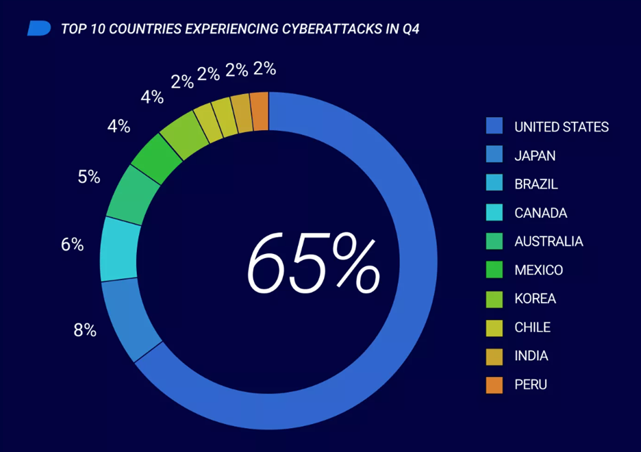

O que é?
Cibersegurança é a prática de proteger informações contra ameaças cibernéticas ou ataques maliciosos. Isso inclui a proteção de sistemas, computadores, servidores, redes, aplicativos e dados armazenados nesses sistemas.A cobersegurança deve ser tratada em diversos aspectos não so no cuidado na internet, mas também no treinamento dos funcionários a fim de evitar o pior.
O que é buscado com esses ataque ?
Geralmente, os autores buscam diversos tipos de informações, dependendo de cada caso. O mais comum é a busca por dados pessoais, como números de CPF, informações financeiras e datas de nascimento, além de outros dados pessoais confidenciais. Além disso, pode ser visada a propriedade intelectual de uma empresa, que consiste nos dados confidenciais da mesma, permitindo que sejam vendidos no mercado negro ou expondo planos de negócios.
Vale ressaltar também a busca por contas corporativas, nas quais são vítimas de roubo, permitindo o acesso a informações pessoais e financeiras. Além disso, a infraestrutura digital também pode ser alvo, uma vez que envolve altos custos em sua produção.
Ataques Cibernéticos no Brasil!
Segundo levantamento da Fortinet, empresa multinacional localizada na Califórnia e especializada em softwares voltados para cibersegurança, o Brasil registrou, no primeiro semestre de 2022, 31,5 bilhões de tentativas de ataques cibernéticos, colocando-o na 2ª posição entre os países mais afetados da América Latina.
Em setembro de 2022, o Brasil já ocupava a 3ª posição mundialmente, de acordo com dados do Global Threat Intelligence Report. Você pode acessar o relatório completo através do seguinte link: Global Threat Intelligence Report.

Grandes empresas ja sofreram ataques!
Empresas como Yahoo, Facebook, Sony Pictures, entre muitas outras de grande porte, já sofreram ataques cibernéticos. O incidente do Yahoo ocorreu entre 2013 e 2014, quando o provedor de serviços de internet e e-mail foi alvo, afetando cerca de 3 bilhões de usuários. Nesse ataque, informações pessoais foram roubadas, incluindo nomes, endereços, números de telefone e senhas criptografadas.